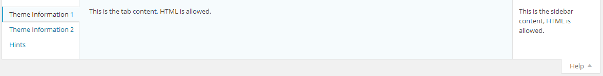

Redux has a large amount of arguments. The framework instance itself has arguments, each field has its own arguments. These are the framework instance level arguments in alphabetical order.
'admin_bar' => 'true'
If set to true, the option panel will appear in the admin bar. Making it easy for your users to quickly get to your panel.
'admin_bar_icon' => 'dashicons-admin-generic'
String value indicated which icon to use for the admin bar icon. Please refer to the Dashicons Cheat Sheet for a list of available icons.
'allow_sub_menu' => 'true'
This is the variable that determines whether or not section labels are displayed below the admin menu.
'async_typography' => false
This variable determines if Google fonts load on the front-end of a theme asynchronously . This should be considered experimental, as some issues have been known to crop up. Any issues should be reported to the Redux Framework Github issues board.
'class' => ''
This variable may be set to append any number of classes to the main Redux class attribute.
'customizer' => 'true'
This variable sets the flag to enable or disabled basic WordPress customizer support..
'customizer_only' => 'false'
This variable determines whether or not to hide the options panel (leaving options accessible only through the customizer). For developing themes specifically for wordpress.org, this argument will need to be set to
'database' => ''
This variable sets the database mode for how Redux options are stored in the database. Currently, the only mode accepted is network for multi-site panel support! Otherwise, leave this argument blank for default functionality.
For normal operation, leave this argument blank, otherwise, choose from one of the following modes. Modes marked as experimental have not been fully tested and may not function properly:
network: For multi-site supporttransient: (experimental) – Sets options as transients, and will expire in the time set viatransient_time.theme_mods,theme_mods_expanded(both experimental) – Saves modifications for the current theme.
'default_mark' => ''
This is the variable specifies the symbol to print by the field’s title when the default value is shown. default_show must be set to true. The * symbol is recommended.
'default_show' => 'false'
This is the variable that enabled or disables whether or not the field’s default value is displayed by the field’s title.
'dev_mode' => 'true'
This is the variable that enables or disables Redux’s developer mode. When developer mode is set to true, the load time is displayed at the bottom of the options panel. Also, Redux loads all field and core JavaScript in non minimzed form.
'disable_google_fonts_link' => false
If set to true, the google fonts link output for typography will be enabled.
'disable_save_warn' => false
This variable determines if the ‘save changes’ notice appears at the top of the options panel when any changes are made.
'display_name' => $theme->get('Name')
This variable sets the title that appears at the top of the options panel.
'display_version' => $theme->get('Version')
This variable set the version number that appears after the title at the top of the options panel.
'footer_text' => '<p>This text is displayed below the options panel. It isn\'t required, but more info is always better! The footer_text field accepts all HTML.</p>'
This variable set the text to be displayed at the bottom of the options panel, in the footer section. Use of HTML is permitted.
'global_variable' => ''
This variable sets a different name for the global variable, to be used in place of the opt_name argument.
'google_api_key' => ''
This variable holder the key used to request Google WebFonts for the Typography field. Without this key, Google fonts will be omitted. Now no longer required to make Google Fonts work!
A Google Developer API must be independently obtained. Redux does not supply this key on your behalf. For more information on obtaining your own key, please visit: https://developers.google.com/fonts/docs/developer_api
'google_update_weekly' => false
This will only function if you have a google_api_key provided. This argument tells the core to grab the Google fonts cache weekly, ensuring your font list is always up to date.
'help_sidebar' => '<p>This is the sidebar content, HTML is allowed.</p>'
This variable sets the text that appears on the left hand side of the help tab, at the top of the option panel page. HTML is permitted. Any text passed should be surrounded by the <p> paragraph tags. An example is shown below.

Example
$this-&gt;args['help_tabs'][] = array('id'=&gt; 'redux-help-tab-1','title' =&gt; __('Theme Information 1', 'redux-framework-demo'),'content' =&gt; __('<code style='display: none;'><code style='display: none;'></code></code>This is the tab content, HTML is allowed.<code style='display: none;'><code style='display: none;'></code></code>', 'redux-framework-demo'));
Arrays for the help_tab arguments should be placed inside the configuration file’s setHelpTabs() function. Each help tab requires its own array block, as shown above.
Help Tab Arguments
| Name | Type | Description |
| id | string | A unique ID representing the individual help tab. |
| title | string | Text representing the title of the help tab. |
| content | string | Text to display in the help tab content area. This string should be surrounded by <p> paragraph tags. HTML is permitted. |
'hide_expand' => false
This variable determines if the ‘Expand Options’ buttons is visible on the options panel.
'hide_reset' => false
This variable determines if the ‘Reset All and ‘Reset Section’ buttons are visible on the options panel.
'intro_text' => '<p>This text is displayed above the options panel. It isn\'t required, but more info is always better! The intro_text field accepts all HTML.</p>'
This variable sets the text that appears at the top of the options panel, but below the title. HTML is permitted.
'last_tab' => ''
This variable sets forces the options panel to open at the specified tab number.
'menu_icon' => ''
This variable accepts a URL to a custom icon to be displayed in the primary menu icon.
'menu_type' => 'menu'
This variable sets whether or not the admin menu is displayed. Accepts either menu, submenu, or hidden.
'menu_title' => 'Sample Options'
This variable sets the text to display as the admin menu’s label, and only when the admin menu is available.
'network_admin' => false
This variable enables the network admin when using the network database mode.
'network_sites' => true
This variable enables sites as well as admin when using the network database mode.
'open_expanded' => false
This variable determines if the options panel sidebar is to be displayed. This may be useful for an options panel with only one section.
'opt_name' => 'redux_demo'
This is the variable where all option data is stored in the database. It also acts as the global variable in which data options are retrieved via code.
'output' => 'true'
This variable acts as a global shut-off for the framwork’s dynamic CSS output. When set to false, Google fonts are also disabled.
'output_tag' => 'true'
This variable sets whether or not dynamic CSS will be generated for the customizer and Google fonts. However, when set to false, dynamic CSS will no longer print to the page head.
'page_icon' => 'icon-themes'
This variable sets the icon appearing in the admin panel, next to the menu title.
'page_parent' => 'themes.php'
This variable sets where the options menu will be places on the WordPress admin sidebar. For a full list of options, visit: http://codex.wordpress.org/Function_Reference/add_submenu_page#Parameters
'page_priority' => ''
This variable accepts a number specifying where the menu will appear in the admin area.
'page_permissions' => 'manage_options'
This variable set the permission level required to access the options panel. For a complete list of roles and capabilities, please visit this page: https://codex.wordpress.org/Roles_and_Capabilities
'page_slug' => '_options'
This variable set the page slug to denote the options panel. It’s recommended to place a unique string (i.e. – theme name) before the value’s underscore.
'page_title' => 'Sample Options'
This variable sets the title to be displayed on the panel page.
'save_defaults' => 'true'
This variable sets whether or not the default values are saved to the database on load, before Save Changes is clicked.
'settings_api' => 'true'
Turns off the use of the settings API. Primarily useful for Customizer-Only instances.
Example
$this-&gt;args['share_icons'][] = array('url' =&gt; 'https://www.facebook.com/pages/Redux-Framework/243141545850368','title' =&gt; 'Like us on Facebook','icon' =&gt; 'el-icon-facebook');
The share_icons argument sets an array of social website icons at the bottom-left of the options panel, before the footer. Any icon or link may be used to indicate any social networking site. Each icon requires its own array block, as shown above.
Share Icons Arguments
| Name | Type | Description |
| url | string | Full URL to your specific page of the chosen social networking site. |
| title | string | Title to display as the alt tag of the icon. |
| icon | string | Specific Elusive Icon to display. |
| img | string | Optional. Full URL to the icon to use in place of a font icon. |
'show_import_export' => 'true'
This variable sets whether or not Redux will display the Import/Export tab at the bottom of the options panel. Please note, if the Import / Export feature is used as a field, this tab will not display regard the the value set to it.
'system_info' => false
This variable determines if the Redux system info section is displayed. It’s useful for debugging purposes, and is only available when dev_mode is set to true.
Please note, when this option is active, it will slow down the panel loading time.
'transient_time' => 60 * MINUTE_IN_SECONDS
This variable set the amount of time to assign to transient values used within Redux. This is an advanced option. If you do not understand what it does, please do not change it.
'update_notice' => 'true'
This variable sets whether or not Redux will display an admin notice when a new build is ready for download via Github. This feature is only available when dev_mode is set to true.
'use_cdn' => 'true'
Tells Redux to use CDN for various JS libraries, or to use an embedded extension.
'cdn_check_time' => 1440
Time before Redux checks to see if the CDN is still accessible.